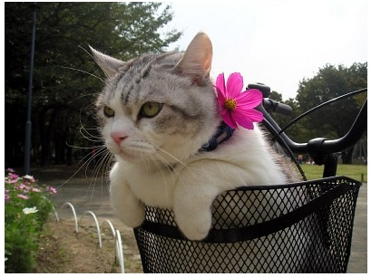
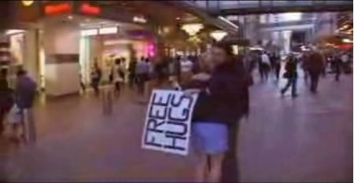

20061221 - Tasmania
WallabyEchidna
Possum Tasmanian Devil Wombats Platypus Koala
20061210 - Nikola Tesla

20061202 - Cymatics
The term cymatics was coined by the Swiss scientist Hans Jenny, it is derived from the Greek "kyma" ("κ?μα") meaning "wave", and "ta kymatica" ("τα κυματικ?") meaning "matters pertaining to waves." -- http://en.wikipedia.org/wiki/Cymatics
20061112 - Capoeira Freer Than Jazz
20061028 - Addicted To YouTube
20061018 - Capoeira
Capoeira Music, Dance, Martial Art, Flexibility, Musical Instrument, Physical Strength, Feeling I can do sooner or later. My life workout. ------------------------------------- 까뽀에라 음악, 춤, 무술, 유연성, 즐거움, 악기 근력, 조금만 더하면 될거 같은 그 느낌 특별한 문제가 없다면 평생할 운동20061015 - Journey to the West
Tripitaka - A Buddhist Monk Moneky King - Sun Wukong Pigsy - Zhu Bajie Sandy - Sha Wujing20061014 - Balloon Flower(Chinese Bellflower)
도라지꽃, 소박하니 예쁘구나 도라지 도라지 백도라지20061014 - I'm Human.
20061006 - FHC
 Free Hugs Campaign
20061005 - Le Coq Sportif

20060930 - Free Hugs Campaign
Sometimes, a hug is all what we need. Free hugs is a real life controversial story of Juan Mann, A man whos sole mission was to reach out and hug a stranger to brighten up their lives. In this age of social disconnectivity and lack of human contact, the effects of the Free Hugs campaign became phenomenal. As this symbol of human hope spread accross the city, police and officials ordered the Free Hugs campaign BANNED. What we then witness is the true spirit of humanity come together in what can only be described as awe inspiring. In the Spirit of the free hugs campaign, PASS THIS TO A FRIEND and HUG A STRANGER! After all, If you can reach just one person... Music by Sick Puppies. (Visit http://sickpuppies.net or http://myspace.com/sickpuppies for the music) ------------------------------ PS. The response to this video has been nothing short of overwhelming and touching. Hugs to every single one of you who messaged. There has been thousands of emails from all over the world by people seeking to participate in the Free Hugs campaign and asking for permission. You do not need permission. This is the peoples movement, this is *your* movement. With nothing but your bare hands you can make THE difference. From : http://www.youtube.com/watch?v=vr3x_RRJdd4&eurl=20060919 - My Berimbau
동우한테 잠시 빌린다는 것이 현재까지 계속 가지고 있게 되었다. 줄은 중간에 약간 구부러져 완전히 펴지지도 않고 대는 너무 많이 휘어져서 줄을 팽팽하게 지탱시키지 못하고 대 중간쯤에 약간 금이 가서 타이로 묶어 놓았다. 소리를 높게 만들기 위해 하단에 타이로 바짝 묶어 놓았다. 가시시는 밑부분이 부서져 테입으로 감아 놓았다. 줄을 치는 긴 막대기는 처음에 너무 길고 무거워 칼로 짧게 그리고 얇게 잘랐다. 한결 가볍게 스피드를 구사할 수 있다. 최근에 산타마리아 리듬으로 연주하다가 띵(줄을 돌로 매우 쌔게 밀어 치는 소리), 팅(줄을 돌로 약간 밀어 치는 소리), 치(줄을 돌로 살짝 되어서 치는 소리), 똥(줄에 돌을 되지 않고 치는 소리)를 정확히 구별해서 칠 수 있게 되었고 산타마리아 리듬을 많이 좋아하게 되었다. 오늘 산타마리아를 연습하다가 이우나 리듬의 감을 조금 느끼게 되었는데 이때까지는 똥팅(또잉)을 짧게 해서 쳤는데 그게 아니고 까베샤를 배에서 밀었다가 다시 배쪽으로 당기면서 띵팅(띠잉)을 매우 짧게 치는 것 갔다.20060916 - Pooh
Piglet sidled up to Pooh from behind. "Pooh!" he whispered. "Yes, Piglet?" "Nothing," said Piglet, taking Pooh's paw. "I just wanted to be sure of you. from : http://www.spymac.com/forums/showthread.php?threadid=246752&curr=4020060906 - 문화는 즐기는 사람의 것입니다.
http://www.youtube.com/v/ashz8AM7tnY20060904 - {first 10-digist prime found in consecutive digits of e}.com
{first 10-digist prime found in consecutive digits of e}.com A billboard that can be found on Route 101, the heavily trafficked artery that links the Valley to San Francisco. No company logo, no recruiting pitch, just the equation. The curious who solves it (Yep, it’s 7427466391.com) typed the answer into their browsers and went to that Web page, which offered another, harder problem (Don’t ask!) that finally led to an invitation to interview at G-o-o-g-l-e. from : http://www.skthew.com/2006/02/24/google-labs-first-10-digist-prime-found-in-consecutive-digits-of-ecom/20060902 - I got NEW Capoeira pants.
I got NEW Capoeira pants. Its color is deep blue sea. It's lighter and easier than old one. As you can see, the pants is decorated with Korean and Brazilian flag on the both side and Berimbau on right bottom is wonderful. I really love it. I'm ready to fly.20060901 - The Ladybug
20060829
Notaden Happy Flare Hamster20060812 - The Host
새끼 잃은 부모 속이 썩어 문드러지면, 그 냄새가 십리 밖까지 진동을 하는 법이여.YoutTube is a treasure chest. right? Life is half spent before we know what it is. - George Herbert Psy. Go. You are a really champion.
20060811 - WSAD Wave
Long time no see WSAD Wave on server running. Everyday cpu usage is 100%.20060809 - Whoo!?

| It was ten o' clock at night and still light. My husband Jay and I were sitting quietly beside a campfire at the edge of a small lake in a remote area of northern Canada. It was July and the northern latitude gave us light until eleven p.m. The brush pilot who had flown us there in a small plane had long since left. We were the only people camped around that small, isolated lake, the only people in the whole valley. You can imagine our surprise at hearing what sounded like a large rock being thrown into the lake. Closer scrutiny revealed that a large beaver slapped his tail on the surface of the lake was the "rock thrower." He was telling us that he was alarmed and displeased at our having camped so close to his home. The next day, we found his stick and mud lodge along the shore line. On subsequent evenings we would crouch behind the lodge and take photographs as the beaver family emerged to gather twigs from a nearby stand of aspen. Our chance encounter with the beavers led me to wonder about other accidental meetings. I let my sense of fun and whimsy be my guide and Whoo!? is the result. |
20060804 - Enjoy quietly
Don't forget your original intention. Enjoy quietly. 첫마음을 잃지말기 은근히 즐기기20060729 - progress image
 The progress image in prototype window class from http://prototype-window.xilinus.com
The progress image in prototype window class from http://prototype-window.xilinus.com
20060726 - Rosalind Franklin
20060715 - Was it a cat I saw?
20060713 - why
Why don't you know, papa? Confidence, Courage, Positive, Composure. Why do I burn CD not to see, Why do I add favorites not to see, Why do I print articles not to see.20060702
Satyr tragopan Illustrated by Peter Schouten20060630 - Red Dot
20060624
I borrowed book "Don't laught, I'm English Book." a long day ago. Not bad. By the way, I like much image cuts in the book. Those image cuts were created by Kwon Yun Joo. He(She) is famouse cartoon writer in Korea. As you know, he(she) creates the SNOW CAT.20060621 - Bacteria Art?
20060619 - World Cup
20060601
Life is vanity. The sence of reality. The Serenity.March Of The Penguins - 20060520
Make a wish - 20060429
movie Sunday is over. We are all going home. No reason to stay here. But no one has made a move. We know that for sure. Nothing lasts forever. But we have too many things gone too fast. Let's make a wish. Easy one. That you are not the only one. And someone's there next to you holding your hand. Make a wish. You'll be fine. Nothing's gonna let you down. Someone's there next to you holding you now. Someone's there next to you holding you. Along the paths you walk.20060428
Knowing is not enough; we must apply. Willing is not enough; we must do. - Johann Wolfgang von GoetheRabbit Girl And Chilean Flamingo - 20060416
I wish I back there. - 20060403
M42 Orion NebulaSnail - 20060325
Ah... How difficult to look for the way to the love. But I never stop. Go. Go.Beautiful Sea Animals - 20060312
Nautilus Turtle Yongala Anenshrimp anencrab
Cuttlefish
anencrab
Cuttlefish
Life Is Like A Dew Drop - 20060308
Keep being fun. Encourage, not impose. Don't hurt someone's heart. Consider someone. Do exercise. Depend less on the machine I don't remember something else..
The Frill Necked Lizard - 20060306
The Frill Necked Lizard is one of Australia's unique native reptile species you will find on an Australian outback 4x4 tour. They can bite but are generally harmless and are not poisonous. The Fill Necked Lizard is unique because he can change his appearance quite dramatically. He looks not unlike a normal medium sized garden skink, until upset. He then fluffs up his soft web-like neck skin to form an aggressive collar that is quite startling. From : http://www.adventure-tours-australia.com/gulf-top-end/frill-necked-lizard.html
Rice-Barley Jellyfish - 20060301
I'd like to tell about a dream I had last night. I was on near a shallow sea. I saw the queer jellyfish. Its name is "rice-barley jellyfish". I don't know why I know its name. Its body is cylinder-shape, they have some body part have a stripes pattern. I think those are their legs, maybe. Oh, they are smilliar to Maxican red kneed tranatula's legs very much as well as color. And they have a transparent hemisphere-shape body part looks like a parabolic anenna. I don't know what it's for. As soon as I awaked from this dream, Hoping the jellyfish have that name exist, I searched "rice-barley jellyfish". Gosh~~, its doesn't exist, either.
Damselfly - 20060226
I watched natural documentary on TV. I had not seen a damselfly for long time, good time to see them. It came to mind that I had saw many dragonfly spawned on the inline-skate road on my way to the fitness center last fall. What's a pity. Maybe they mistook it for a lake.
Tarsier - 20060223

Tarsiers are small, nocturnal primates found in South East Asia. Several species are endemic to the island of Sulawesi including Tarsius pumilus, Tarsius spectrum and Tarsius dianae. They are found in primary and secondary rainforest. Tarsiers are characterised by their large, round eyes, long feet and long tails. They are the smallest primates known, measuring between 11 and 15cm in length and weighing only about 120g. They have long hindlimbs which allows them to jump between trees and adhesive pads on their digits to facilitate climbing. Their diet consists entirely of insects, which is unusual for primates from : http://www.freewebs.com/wallacea/tarsiers.htm
Frog And Snail - 20060222
Suckermouth Catfish & Macaw - 20060217
The fish bowel is on the doorway in my office. Many kind and a lot of colorful fish are swimming in there. Then I'm interested in one kind of fish out of them. Their name is "Suckermouth Catfish". They are bigger than others and have a lot of queer spots. They usually cling to the small rock, glass wall and bottom. I think they don't like to swim around, just like to be motionless. Sometimes they take tiny pebbles mouth and then spit it out moving slowly on bottom.
I'm searcing "poaching image" for some resaon on Google images. I had found a macaw image. Wow!! its color is fanstastic. Don't you think so? What's a beautiful. I post it right now. And I happend to know "poacher" another mean - a people to hunt wild animals illegally. And another means is a steamer.
This Message Comes From Chardin - 20060210
"자신을 믿지 않는 녀석 따위는 노력할 가치도 없다." - 나루토 中 He who doesn't believe in himself isn't worthy of trying. "아픔을 동반하지 않는 교훈에는 의의가 없다." - 강철의연금술사 中 A moral without pain doesn't mean anything. "내가 죽어도 세상은 바뀌지 않는다. 하지만 내가 살아있는 한 세상은 바뀐다." - 최유기 中 The world will not be changed even though I die today. But the world will be changed as long as I am alive. "다른사람들의 어리석음을 보고 지혜를 배워라." Learn wisdom by the follies of others. "날지 못하는 돼지는 그냥 돼지일 뿐이야." - 붉은돼지 中 A pig who does not fly is just an ordinary pig.
A Giant Diving Beetle - 20060204
I had only one chance to see them. When I was a child, I visited a neighbor. A neighbor's little boy showed me the a fish bowl. In there, about 10 diving bettles were swimming dizzily. But they didn't have yellow spot like it in the stamp, just all black.
Old And New - 20060128
Let me know this charactor's name, please.
Calmness Of Mind - 20060123
Oh, the difficult way for calmness of mind.